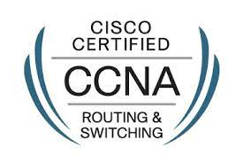

Mes Certifications
Attestation Cisco Networking Essentials
Avec cette attestation vous attesterez que vous avez aquis les compétences basique du réseau et de l'informatique. Cette attestation va consister d'apprendre ce que c'est par exemple un routeur, un switch, un pare-feu etc... Ca va consister aussi de savoir se que c'est une adresse IPv4 ou IPv6, se que c'est une carte réseau et les différents protocoles réseau de base .
Voir mon attestationAttestation MOOC de L'ANSSI
Plus que jamais, la sécurité du numérique est l’affaire de tous. Pour mieux informer et sensibiliser, les modules de sensibilisation en ligne SecNumacadémie proposent des contenus pédagogiques, afin qu’ils deviennent à leur tour acteurs de la sécurité du numérique dans un environnement professionnel. L’objectif de SecNumacadémie est de permettre à tous d’être initiés à la cybersécurité ou d’approfondir leurs connaissances, afin de pouvoir agir efficacement sur la sécurité de leurs systèmes d’information (SSI) au quotidien.
Voir mon attestation

Certification CCNA (en cours)
Avec ce certificat, vous attesterez votre niveau de maîtrise dans le matériels réseaux Ce certificat est un très gros bonus pour mon métier car grâce a cette certification j'aurais plus d'oppurtunités a trouver du travail. Ce certificat va consister a évaluer mes compétences en réseau et approfondir mes connaissance en réseau comme par exemple les différents protocoles de routage.
Voir mon attestationAttestation de la CNIL (en cours)
Que contient cette formation RGPD ?
Le MOOC de la CNIL est composé de 5 modules
Au sein de chacun de ces modules, des unités permettent d’aborder les grands principes et thématiques du RGPD (licéité des traitements de données, minimisation des données, les transferts internationaux, etc.).
Voir mon attestation